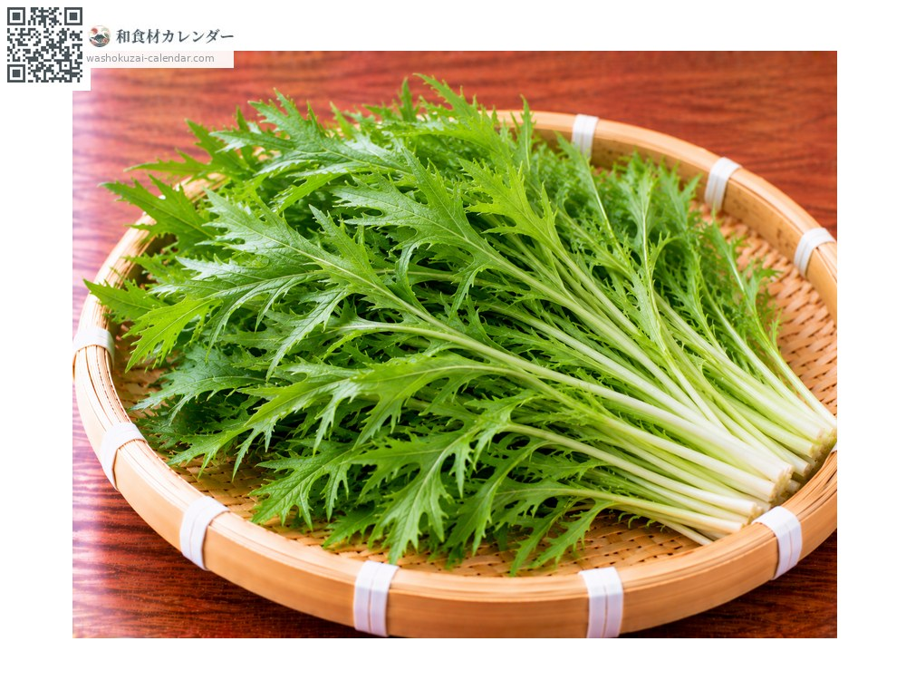
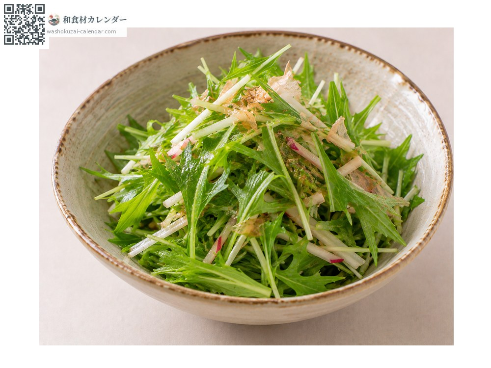
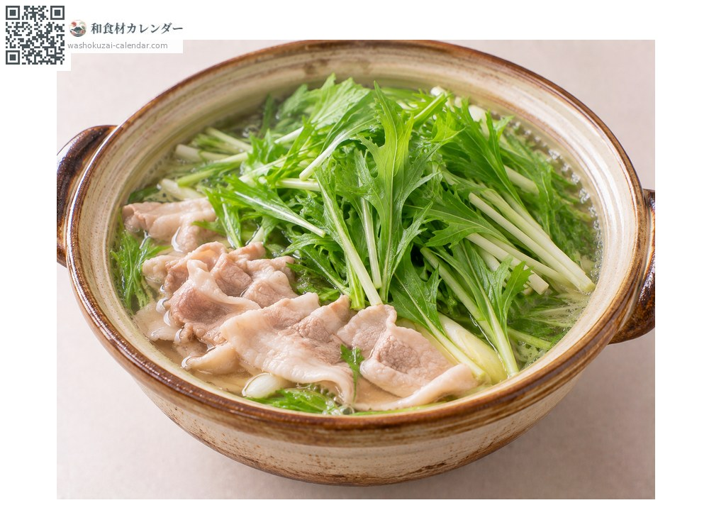
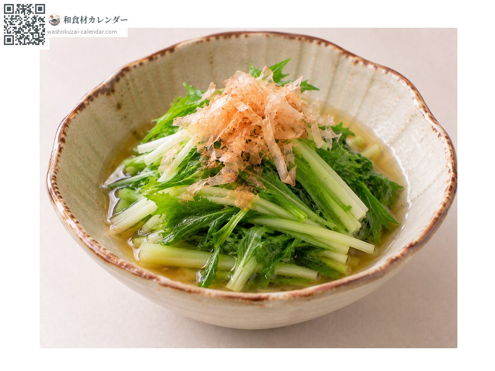
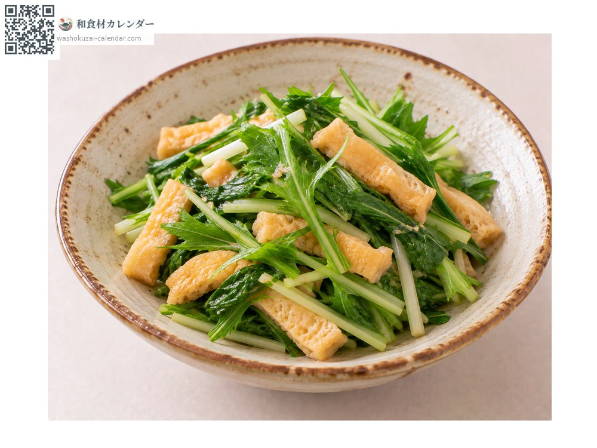

ผัก
ผักมิซุนะ
水菜 みずな mizuna
ชื่ออื่นmizuna
อร่อยที่สุดในเดือน ม.ค., ก.พ., พ.ย., ธ.ค.

ช่วงที่อร่อยที่สุด
ม.ค.
ก.พ.
มี.ค.
เม.ย.
พ.ค.
มิ.ย.
ก.ค.
ส.ค.
ก.ย.
ต.ค.
พ.ย.
ธ.ค.
ช่วงอร่อยที่สุดมีจำหน่าย
วิธีปรุง

สลัด
ฉีกกินสด สัมผัสกรอบคือจุดเด่น

ฮาริฮารินาเบะ
ต้มกับเนื้อวาฬหรือหมู เป็นอาหารพื้นบ้านเกียวโต

โอฮิตาชิ
ลวกเร็ว ๆ แล้วแช่น้ำดาชิ

ผัด
ผัดอย่างรวดเร็ว ถ้าสุกเกินไปจะเสียสัมผัส
วิธีเลือก
ใบเขียวเข้ม ก้านขาวและเรียว กอแน่นไม่ช้ำ
วิธีเก็บรักษา
ไม่ทนความแห้ง ห่อกระดาษชื้นแล้วตั้งขึ้นแช่เย็น ใช้ภายใน 3-4 วัน
แหล่งผลิตหลัก
เกร็ดน่ารู้
เป็นหนึ่งในผักเกียวโต ชื่อมาจากการที่ปลูกได้ด้วยน้ำและดินโดยไม่ใช้ปุ๋ย แถบคันไซเรียกว่าเคียวนะ เสียงกรอบเวลาใส่ในหม้อไฟเป็นที่มาของชื่อเมนูฮาริฮารินาเบะ